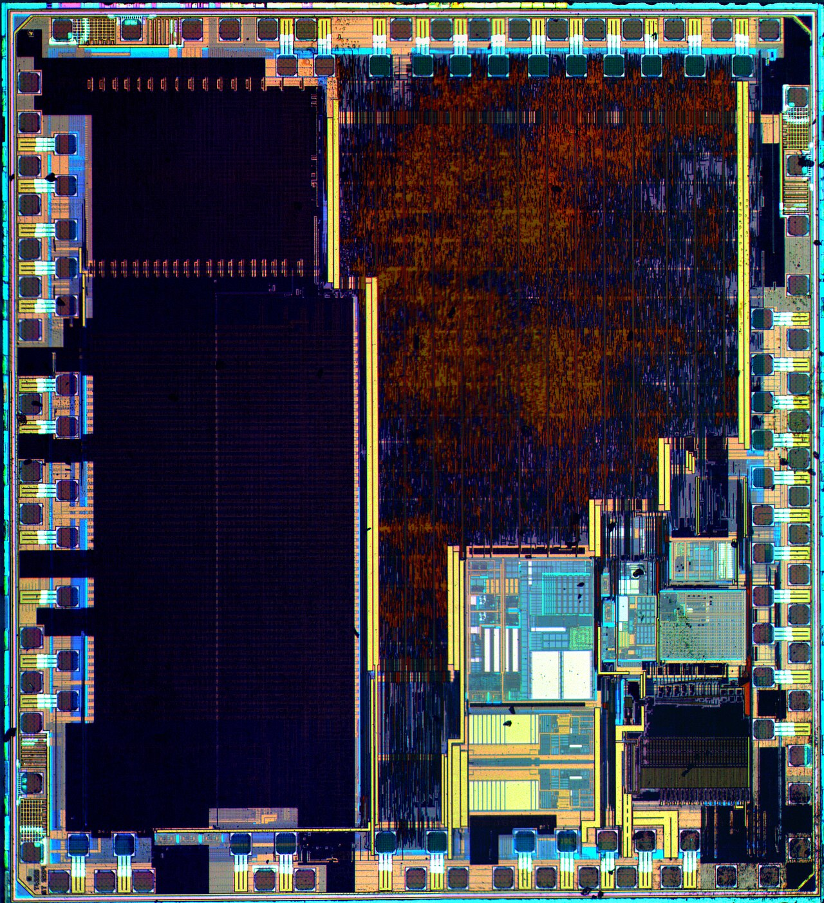
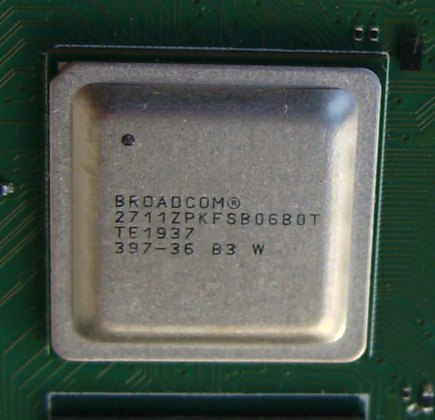
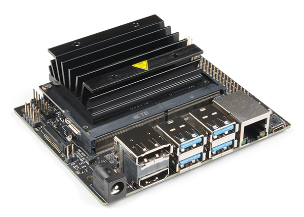
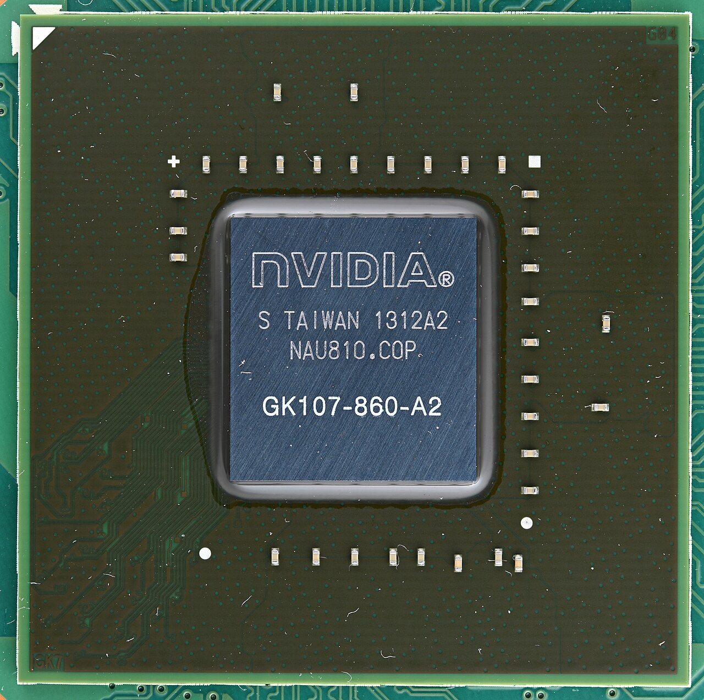
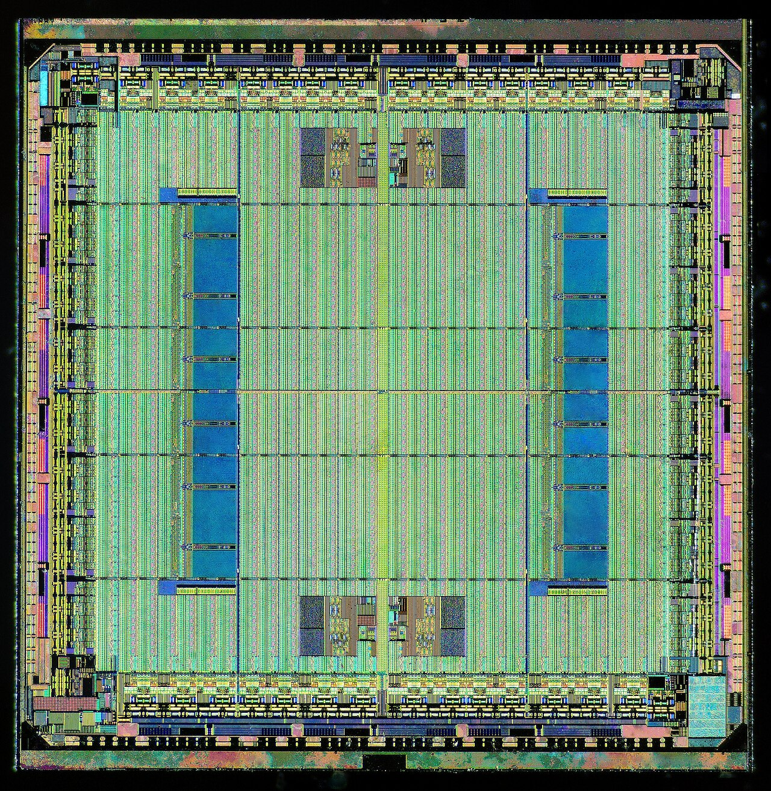
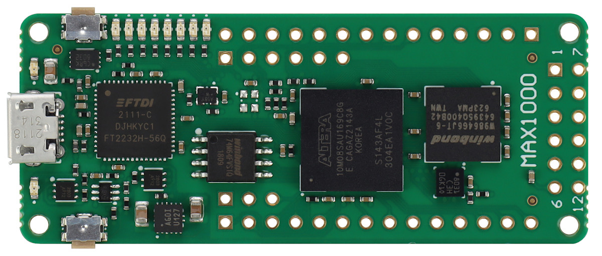

Timing plan · 90 minutes
- 0–5The question of the session: what does an accelerator actually accelerate?
- 5–18CPU versus MCU: pipelines, SIMD, the memory hierarchy; the roofline and the layer explorer (interactive).
- 18–28GEMM in five steps; convolution as GEMM (im2col); layouts.
- 28–40Microcontrollers in practice: CMSIS-NN, a worked Apollo4-class case study; DSPs.
- 40–45GPUs and the SIMT model.
- 45–50Break.
- 50–62Systolic arrays and dataflows (TPU, NPUs); FPGAs; analog in-memory and neuromorphic computing.
- 62–68Choosing a platform (Fig 4.14).
- 68–82From graph to binary: conversion, fusion, memory arenas; benchmarking honestly; testing.
- 82–88After shipping: drift, on-device learning, security; frontiers.
- 88–90Session 5 logistics.
In one sentence
Hardware accelerates arithmetic, but a layer can only run as fast as its operands arrive — so the platform, the model and the compiler must be chosen together, against the memory hierarchy rather than the peak-operations figure on the datasheet.
Part AThe processor and its memory
4.1What makes a CPU fast, and what an MCU does not have
A modern application CPU extracts performance from four mechanisms: pipelining (overlapping instruction stages), superscalar out-of-order issue (executing several independent instructions per cycle, reordering around stalls), speculation (branch prediction and prefetching), and SIMD (one instruction operating on a vector of values). Only the first and the last are reliably available on a microcontroller.
The practical consequences for embedded ML:
- A Cortex-M0+ has a short in-order pipeline, no SIMD, no DSP instructions and no cache. Its performance is close to what a cycle count on paper predicts, which is unusual and pleasant.
- A Cortex-M4F adds the DSP extension:
SMLADperforms two signed 16×16 multiply–accumulates into a 32-bit accumulator in a single instruction, which is exactly the primitive an int8/int16 inner loop wants. Hand-tuned kernels exploiting it are typically several times faster than compiler output — this is the measured benefit that CMSIS-NN reports. - A Cortex-M7 is dual-issue with caches and tightly-coupled memories; performance now depends on placement, and a badly placed weight array can cost more than a badly written loop.
- Helium (the M-profile vector extension, on Cortex-M55/M85 class cores) brings 128-bit SIMD with 8-bit lanes to the microcontroller world, closing much of the gap with mobile NEON for quantized inference.
Foundations · locality, cache lines, and the two rules that follow
Memory is not delivered a word at a time. A miss fetches a whole cache line — typically 32 or 64 bytes — because DRAM and buses are far more efficient in bursts. Two consequences carry most of the performance of numerical code:
- Spatial locality. If you touch one word of a line, touch the rest before it is evicted. This is why layout (NHWC vs NCHW) is a performance decision and why a strided access pattern can waste 15/16 of your bandwidth.
- Temporal locality. If you will need a value again, use it again soon. This is the entire content of blocking: choose a tile small enough to stay resident, and do all the work that touches it while it is there.
A microcontroller without a cache does not escape this — it inherits a harsher version. There is no hardware to guess for you, so locality becomes an explicit placement decision: which array is in TCM, which in SRAM, which stays in flash and is streamed by DMA. The good news is that the machine becomes predictable; cycle counts on paper actually match the device.
4.2The roofline model depth
Derivation
Let a kernel perform W operations and move Q bytes, so its arithmetic intensity is I = W/Q. The machine has peak compute π (ops/s) and peak bandwidth β (bytes/s). Time is at least W/π (compute) and at least Q/β (memory), and assuming perfect overlap of the two,
Plot P against I on log–log axes: a diagonal of slope β meeting a horizontal ceiling π. The ridge point is at I* = π/β — the arithmetic intensity a kernel must exceed to have any chance of reaching peak compute.
Two worked ridge points
A laptop CPU core: ≈ 100 GFLOP/s with ≈ 20 GB/s of achievable bandwidth gives I* = 5 FLOP/byte. Any kernel below that is memory-bound. A batch-1 dense layer at ≈ 1 MAC/byte (Table 4.1) is hopelessly memory-bound — which is why single-sample inference on a CPU never approaches the advertised FLOP/s.
A Cortex-M4F at 80 MHz: roughly 2 int8-MAC per cycle with a DSP kernel gives ≈ 160 MMAC/s. Single-cycle SRAM at 32 bits per access is ≈ 320 MB/s. Then I* = 0.5 MAC/byte — a much lower bar, so MCU kernels are more often compute-bound than desktop ones. This is a genuinely useful asymmetry: on an MCU, reducing MACs often does reduce time.
The roofline is a bound, not a prediction: it tells you what is impossible, and how much headroom remains. Never quote it as a measurement.
Read the figure as a set of predictions. On the microcontroller every layer type sits right of the ridge, even the fully connected one: an MCU is almost always compute-bound, so reducing MACs (and using int8 SIMD) translates directly into speed. Add an NPU and the ridge moves right by more than an order of magnitude: now depthwise and fully connected layers are memory-bound and gain little from the accelerator, while standard convolutions gain a great deal. On an embedded GPU only the densest layers come close to peak. The same network can therefore have a different bottleneck on each platform, which is why efficient architectures designed for one target can disappoint on another (Session 3, Part D).
4.3Arithmetic intensity: why depthwise layers disappoint
Define arithmetic intensity as MACs divided by bytes of memory traffic. For a layer whose weights and activations must be read once and whose output written once:
Evaluate this for a 3×3 layer on a 14×14 feature map with 256 channels, int8:
| Layer | MACs | Bytes moved | Arithmetic intensity |
|---|---|---|---|
| Standard 3×3, 256→256 | 1.16 × 10⁸ | 6.9 × 10⁵ | ≈ 168 MAC/byte |
| Depthwise 3×3, 256 | 4.5 × 10⁵ | 1.0 × 10⁵ | ≈ 4.4 MAC/byte |
| Pointwise 1×1, 256→256 | 1.28 × 10⁷ | 1.7 × 10⁵ | ≈ 77 MAC/byte |
| Dense, 1024→1024 | 1.05 × 10⁶ | 1.05 × 10⁶ | ≈ 1 MAC/byte |
Table 4.1 — Arithmetic intensity, computed for a 14×14×256 activation in int8 with a batch size of one. Depthwise and dense layers sit an order of magnitude below standard convolutions: they read almost as many bytes as they perform multiplications, so on any machine with a compute-to-bandwidth ratio above a few MAC/byte they are memory-bound, and making them arithmetically cheaper does nothing.
4.4GEMM, built up in five steps
General matrix multiply C = A·B with A of size m×k and B of size k×n is 2mnk operations moving, in the best case, mk + kn + mn elements. Its arithmetic intensity therefore grows with the matrix dimensions, which is why GEMM can approach peak — if the data movement is organised.
Step 1 — the naive loop and why it fails
With row-major storage, the inner loop strides through B by a full row per iteration. Every access is a fresh cache line of which one element is used; the effective bandwidth is the line size divided by the element size worse than it should be — a factor of 16 for a 64-byte line and 4-byte floats. Each element of A and B is also re-read n and m times respectively.
Step 2 — loop order
Reordering to i–r–j and accumulating into a row of C makes the inner loop stream contiguously through both B and C, with A[i,r] held as a scalar. This alone typically gains several times, and it is the cheapest optimisation in the field.
Step 3 — blocking, derived
Choosing a tile size from a cache size
Partition all three matrices into b×b tiles. Computing one output tile requires one tile of A, one of B and one of C to be resident, so with element size s bytes and cache capacity S bytes we need
For a 32 kB L1 cache and float32 (s = 4): b ≤ √(32768/12) ≈ 52, so tiles of 48 are a sensible choice, leaving room for other traffic. For int8 (s = 1) the same cache allows b ≈ 104 — quantization does not merely halve or quarter the bytes; it enlarges the tile that fits: going from fp32 to int8 doubles the tile side, and with it the reuse per byte loaded. This second-order benefit of quantization is worth more than students expect and is often overlooked.
Within a tile, each element of A is reused b times, so memory traffic falls from O(mnk) to O(mnk/b). Real libraries block for two or three cache levels at once with different b per level.
Step 4 — packing
Even with the right tile size, tiles are strided views of a larger array, so each row of a tile lives in a different cache line and TLB page. Production libraries therefore pack: copy the tile into a contiguous scratch buffer laid out exactly in the order the inner kernel will consume it. The copy costs bandwidth once and repays it on every subsequent pass. This is the structure of the classic Goto/BLIS five-loop organisation, and it is why a hand-written blocked loop still loses to OpenBLAS.
Step 5 — the micro-kernel
The innermost kernel computes a small mr×nr block of C entirely in registers, streaming k columns of the packed panels through it. The constraint is the register file: mr·nr accumulators plus a few operand registers must fit, so on a machine with 32 vector registers a 8×8 or 6×16 micro-kernel is typical. Register blocking is where the last 2–3× lives, and it is why these kernels are written in intrinsics or assembly.
4.5Convolution on a CPU: five strategies
| Strategy | Arithmetic | Extra memory | Notes |
|---|---|---|---|
| im2col + GEMM | baseline | ×k² on the input patch buffer | Reuses a tuned GEMM; the buffer blow-up is often fatal on an MCU |
| Partial im2col | baseline | two columns only | CMSIS-NN's approach: build a couple of columns at a time, keeping SRAM bounded |
| Implicit GEMM | baseline | none | Index arithmetic replaces the copy; standard in GPU libraries |
| Direct convolution | baseline | none | Hand-blocked loops over the natural layout; best for depthwise |
| Winograd F(2×2, 3×3) | 16 vs 36 mults → 2.25× | transform buffers | Transforms add adds; numerically fragile in low precision |
| FFT convolution | wins for large k | complex-valued buffers | Rarely worth it for 3×3; relevant for long 1-D audio kernels |
Table 4.2 — Convolution strategies. Note that two of the six — Winograd and FFT — change the numerics: Winograd in particular replaces multiplications with a transform whose error grows with tile size, and combining it with int8 quantization is a research problem rather than a default.
Layout matters as much as algorithm. NHWC keeps the channel dimension innermost and contiguous, which is what a vectorised inner product over channels wants; NCHW keeps spatial data contiguous, which suits some spatial kernels. CMSIS-NN and TFLite Micro use NHWC for exactly this reason. Converting between layouts at runtime is pure memory traffic and should be eliminated by the compiler (§4.14).
How to measure on an MCU
Arm Cortex-M cores expose a cycle counter (DWT->CYCCNT). Read it around the kernel, subtract the measurement overhead, and report cycles rather than milliseconds so the number survives a clock change. Warm the caches (or explicitly do not, and say so), repeat, and report the median and the interquartile range — a single run on a system with interrupts enabled is not a measurement. §4.17 formalises this.
Part BThe platform landscape
4.6Microcontrollers: what you actually have to plan
An MCU is a CPU core plus SRAM, flash, and a large collection of peripherals on one die. For ML the relevant features are:
- A flat, explicit memory map. No virtual memory, no MMU (usually an MPU at most). You choose, in the linker script, whether an array lives in flash, SRAM, or tightly-coupled memory. Weight arrays are
constand stay in flash; the activation arena must be in SRAM. - DMA. A peripheral that moves data without the core. This is what lets you acquire the next audio buffer while computing on the previous one — double buffering — and it is the difference between a design that meets its deadline and one that drops frames.
- Power states. Run, sleep, deep sleep, and various retention modes, with wake-up latencies from microseconds to milliseconds. Energy per inference must include the wake-up transient and any peripheral that had to stay powered; on a duty-cycled device this overhead frequently dominates the compute.
- Interrupt-driven acquisition. The sampling ISR must be short and bounded; inference runs in the main loop or a low-priority task. Getting this wrong produces sporadic sample loss that looks like a model problem.
Matrix multiply on an MCU follows §4.4 with the constants changed: there is often no cache to block for, so blocking targets the SRAM you explicitly manage; im2col is replaced by partial im2col with a two-column buffer; int8 weights and int32 accumulators are the norm; and the inner loop uses SMLAD-style dual MACs. When the whole weight matrix does not fit, the work is restructured as a sequence of matrix–vector products so that only one column of the weight tile is resident at a time, streamed from flash by DMA.
4.7A microcontroller case study
On Arm Cortex-M devices the inner loops of neural-network layers are almost never hand-written by the application developer. CMSIS-NN (Lai, Suda and Chandra, 2018) provides optimised int8 kernels for convolution, depthwise convolution, fully connected layers, pooling and activations, using the cores' SIMD instructions (on Cortex-M4/M7, the dual 16-bit multiply–accumulate instruction, with 8-bit operands widened to 16 bits first; on the Helium-equipped Cortex-M55/M85, 128-bit vector instructions that process sixteen 8-bit lanes). Inference frameworks — TensorFlow Lite Micro, and vendor tools such as STM32Cube.AI or Ambiq's neuralSPOT — call these kernels or their own equivalents. The practical lesson: the layer types and parameters these libraries optimise (int8, NHWC layout, certain kernel sizes and strides) define what is cheap on the device, and an architecture that strays from them falls back to slow reference code.
The case study above is deliberately pedantic about assumptions, because published "energy per inference" figures routinely omit half of them. The vendor's µA/MHz figure is a best case for a specific supply configuration and code running from on-chip memory; the sustained MACs per cycle depend on the kernel library and the layer shapes; and the system energy includes the microphone, the feature extraction, sleep-mode retention and any communication. A measurement with a power analyser over many inferences — MLPerf Tiny's energy methodology is a good template — is the only number that should go in a paper.

Photo: Wikimedia Commons

Photo: Wikimedia Commons
4.8Digital signal processors
DSPs occupy the space between MCUs and accelerators. Their distinguishing features are a Harvard architecture (separate instruction and data buses, so a MAC can fetch an operand and an instruction in the same cycle), single-cycle multiply–accumulate with wide guard-bit accumulators, hardware circular addressing (free ring buffers for FIR filters and streaming windows), zero-overhead loops, and often a VLIW issue structure that schedules several operations per instruction word statically. For always-on audio front ends — filtering, FFT, mel filterbank — a DSP core is frequently more efficient than either the MCU or the NPU beside it, and modern audio SoCs pair all three.
4.9GPUs and the SIMT model
A GPU contains many simple cores grouped into streaming multiprocessors. Threads are scheduled in lock-step groups (warps, typically 32); all threads in a warp execute the same instruction on different data. Three consequences dominate ML performance:
- Divergence. If threads in a warp take different branches, both paths execute with the inactive lanes masked. Data-dependent control flow is therefore expensive — one reason unstructured sparsity is hard to exploit (Session 3).
- Coalescing. Consecutive threads should access consecutive addresses so the memory system can service the warp with a few wide transactions. Layout choices (NHWC vs NCHW) are really coalescing choices.
- Occupancy. Latency is hidden by having many warps resident; resident warps are limited by registers and shared memory per block. Tuning tile sizes is a three-way negotiation between reuse, register pressure and occupancy.
GEMM on a GPU follows the same five steps as §4.4, with the fast memory made explicit: partition into tiles; each thread block cooperatively loads a tile of A and of B into shared memory (on-chip, software-managed); threads accumulate into registers; synchronise; iterate over the k dimension; write back. Tensor cores add a hardware primitive that performs a small fixed-size matrix multiply–accumulate in one instruction at reduced precision, which is why mixed precision is the default for training and increasingly for inference.
Why edge GPUs disappoint on batch-1 inference
All the mechanisms above hide latency with parallelism. A single inference on a small model offers little parallelism per layer, so occupancy collapses and the machine runs at a small fraction of peak. This is not a driver bug; it is the architecture working as designed. If your embedded module has a GPU and your workload is one stream, expect a large gap between advertised TOPS and delivered throughput, and consider batching across sensors or time.
Foundations · why SRAM, DRAM and flash behave so differently
Three storage technologies appear throughout this course and their properties are not arbitrary conventions — they fall directly out of how one bit is built.
4.10Systolic arrays and the dataflow taxonomy depth
Dataflow taxonomy. Accelerators differ in which reuse they hardwire, a classification made standard by the Eyeriss work:
| Dataflow | What stays put | Reuse exploited | Weakness |
|---|---|---|---|
| Weight-stationary | Filter weights in each PE | Weight reuse across the whole input | Partial sums must be moved and accumulated |
| Output-stationary | The accumulator for one output | Partial-sum reuse — no psum traffic | Weights and activations both stream |
| No-local-reuse | Nothing; large shared buffer | Maximises on-chip storage density | Highest energy per operation |
| Row-stationary (Eyeriss) | A row of the filter and a row of input in each PE | All three: weights, activations and partial sums | More complex mapping and control |
Table 4.3 — Accelerator dataflows. The unifying claim of this literature is that energy is dominated by data movement, so the right question about an accelerator is not "how many MACs" but "which reuse does its dataflow capture, and does my layer have that kind of reuse?" A depthwise layer, for instance, has almost no weight reuse to capture.
MicroNPUs. At the microcontroller end, small neural accelerators (Arm Ethos-U class and many vendor equivalents) sit beside a Cortex-M core, execute a restricted operator set in int8 from a command stream prepared offline by a vendor compiler, and fall back to the CPU for anything unsupported. Two practical consequences: an unsupported operator in the middle of your graph can cost more in fallback and layout conversion than it saves anywhere else; and the vendor compiler, not the training framework, is the component that determines whether your model is fast.

Photo: Wikimedia Commons

Photo: Wikimedia Commons
4.11FPGAs
An FPGA is a fabric of lookup tables, flip-flops, block RAMs and hard DSP slices that you configure into an arbitrary datapath. For ML this means you can build exactly the pipeline your model needs — a fixed sequence of layers with custom bit widths, no instruction fetch, no cache, and deterministic latency measured in clock cycles. Extreme quantization pays off here in a way it does not elsewhere: a binary or ternary network becomes XNOR-and-popcount in LUTs, and the resource saving is close to linear in bit width because the multiplier itself shrinks.
The costs are real: development time is measured in weeks rather than days even with high-level synthesis; clock rates are an order of magnitude below ASICs; and the design is tied to a model architecture, so a model update can mean a re-synthesis. FPGAs are the right answer for low-volume, low-latency, high-value deployments — industrial inspection, medical instruments, radar front ends, physics triggers — and the wrong answer for consumer products at scale.

Photo: Wikimedia Commons

Photo: Wikimedia Commons
4.12Beyond digital: analog in-memory and neuromorphic computing
Analog in-memory computing attacks the data-movement problem at its root: store weights as the conductances of a resistive memory crossbar (phase-change memory, ReRAM), apply activations as voltages, and let Ohm's and Kirchhoff's laws perform the matrix–vector product in the array itself, in constant time and without moving the weights at all. Reported results are genuinely impressive — a 64-core mixed-signal phase-change-memory chip in 14 nm reported up to 63.1 TOPS and 9.76 TOPS/W in its low-precision mode with near-software-equivalent accuracy on ResNet and LSTM workloads (Le Gallo et al., Nature Electronics, 2023).
Be equally clear about the limits, because this is where hype concentrates: the analog-to-digital converters at the array periphery consume a large share of the energy and set the effective precision; device conductances drift with time and temperature, so weights must be periodically refreshed or the network trained to tolerate drift; writing weights is slow and wears the devices, so these are inference-only accelerators for fixed models; and the achievable precision is a few effective bits, which requires hardware-aware training. Treat published TOPS/W figures as upper bounds obtained on well-matched workloads.
Neuromorphic and spiking systems encode information in the timing of sparse events and compute only when events arrive, which is a natural fit for always-on sensing with a low event rate. Event cameras and spiking audio front ends have demonstrated real advantages in latency and energy for sparse, temporally structured signals. The open problems are training (surrogate-gradient methods are improving but are not yet routine), the absence of a standard software stack, and a shortage of tasks where the sparsity assumption clearly holds. Treat it as a live research direction with a real physical argument behind it, not as a product category.
4.13Choosing a platform
| If your binding constraint is… | Consider | Watch out for |
|---|---|---|
| Microwatt average power, years on a cell | MCU, duty-cycled, with a cascade front end | Wake-up energy dominating compute |
| Milliwatts, int8 CNN, tight unit cost | MCU + microNPU | Unsupported operators falling back to CPU |
| Single-stream latency, moderate power | Mobile SoC / embedded module | Batch-1 occupancy collapse on the GPU |
| Many concurrent streams | Embedded GPU module | Thermal throttling changing your benchmark |
| Deterministic microsecond latency | FPGA | Development cost and model rigidity |
| Volume > 10⁶ with a fixed model | ASIC | Non-recurring engineering cost and the schedule |
Table 4.4 — A decision guide, not a decision. In practice ecosystem maturity — compiler quality, operator coverage, debugging tools — decides more projects than peak performance does, and it is the factor most often omitted from comparisons.
Exercise — defend or change one rating
Pick one cell of Fig 4.14 that you disagree with, name a specific part (with datasheet) and a specific workload, and argue for a different rating. The ratings depend on both, which is the point of the exercise.
Part CDeployment and life after deployment
4.14From graph to binary
Toolchains you should be able to name and distinguish. TensorFlow Lite for Microcontrollers — interpreter-based, no dynamic allocation, the de facto portable baseline. ExecuTorch — PyTorch's ahead-of-time export and lightweight runtime for edge targets. TVM / microTVM — a compiler that auto-tunes kernel schedules per target, generating C for bare-metal devices. ONNX Runtime — a portable exchange format and runtime with execution providers per backend. Vendor NPU compilers — for example Arm's Vela for Ethos-U, which converts a quantized TFLite graph into an NPU command stream and reports which operators fell back to the CPU. Integrated platforms such as Edge Impulse wrap acquisition, training, optimisation and deployment; convenient, and worth understanding as an abstraction whose leaks are the subject of the rest of this part.
4.15Memory planning and fusion depth
An MCU runtime has no heap. All intermediate tensors live in one statically-sized buffer, the arena, and the compiler must decide where each tensor sits. This is a two-dimensional packing problem: each tensor has a size (height) and a liveness interval from the operator that produces it to the last operator that consumes it (width), and the arena size is the minimum height of a rectangle into which all these boxes pack without overlap.
Operator fusion eliminates intermediate tensors entirely by computing several operations in one pass over the data: convolution + bias + batch-norm + ReLU becomes one kernel writing one output. The gain is memory traffic, not arithmetic, which by now should be the expected answer. Fusion also changes numerics — an unfused sequence may round twice where a fused one rounds once — which is a legitimate cause of small float/deployed discrepancies and should be checked rather than assumed away.
The unsupported-operator problem is the most common practical blocker on accelerated targets. A single unsupported operator in the middle of a graph forces a round trip to the CPU, often with a layout conversion in each direction, and can cost more than every optimisation elsewhere in the model. Check the vendor compiler's operator-support list before designing the architecture, not after.
4.16Co-designing the network and the runtime
Sessions 1 and 3 established that a CNN's peak SRAM is set by its first few layers, where the activation tensors are large, while its parameters sit at the back. Two lines of work by Lin, Han and colleagues — both on the presentation list (topic D) — turned that observation into a method.
MCUNet (NeurIPS 2020) searches the network and builds the inference engine together. Its TinyNAS first chooses the search space itself — input resolution and width multiplier — so that the networks in it fit the target's flash and SRAM, and only then searches architectures within it. Its TinyEngine replaces an interpreter with code generated for the specific network, plans memory around the whole schedule, and executes depthwise convolutions in place. The paper reports ImageNet top-1 accuracy above 70 % on an off-the-shelf microcontroller, with several times less SRAM and flash than quantized MobileNetV2 and ResNet-18 baselines.
MCUNetV2 (NeurIPS 2021) attacks the activation peak directly with patch-based inference: the memory-hungry first stage is executed on one spatial patch of the input at a time, so only a patch-sized slice of each large tensor is ever live; the later, low-resolution stages run layer by layer as usual. The overlap between neighbouring patches' receptive fields costs repeated computation, which the paper reduces by redistributing receptive field towards the later stages. The reported reduction of peak memory is several-fold.
The general lesson is the one this session keeps returning to: the scarce resource on a microcontroller is working memory, and the largest gains come from treating the network's structure, the execution schedule and the memory plan as a single design problem rather than three separate ones.
4.17Benchmark methodology method
A reported number is a claim about a procedure. The procedure must be stated. Minimum disclosure:
| Dimension | What must be reported | Common omission that invalidates the result |
|---|---|---|
| Hardware | Exact part number, core clock, bus clock, flash wait states, cache configuration, supply voltage | "Cortex-M4" with no clock or wait-state configuration |
| Software | Compiler and version, optimisation flags, runtime and version, kernel library | Comparing a hand-tuned kernel against -O0 reference code |
| Model | Exact graph, quantization scheme and granularity, input resolution | Latency of the int8 model, accuracy of the float one |
| Input | Distribution, whether inputs vary between runs, warm or cold start | Timing the same cached tensor 1000 times |
| Statistics | Repetitions, median and dispersion, outlier policy, interrupts enabled or not | A single number with no dispersion |
| Energy | Measurement point, instrument and bandwidth, what was included (radio? sensor? idle?), duty cycle | Multiplying average current by inference time and calling it energy |
Table 4.5 — Benchmark disclosure checklist. Use it as a referee and as an author. Roughly half of published embedded-ML latency comparisons fail at row two.
Why energy must be measured
Energy per inference is not average power times latency. A duty-cycled system spends energy on the wake-up transient, on peripherals that must be powered before the core is useful, on the sensor's own settling time, and on the DMA and memory activity that a cycle count does not see. It also depends on supply voltage and temperature. The standard method is a sense resistor or a source-measure unit with enough bandwidth to capture the current transient, integrating over a complete duty cycle — which is exactly what MLPerf Tiny's energy rules specify, and exactly what a streaming benchmark forces you to include.
4.18Testing an embedded model
- Per-layer parity. Run identical inputs through the float reference and the deployed graph, dump every intermediate tensor, and compute per-layer SQNR. Report the first layer where it collapses. This single practice removes most deployment guesswork.
- Golden vectors. Freeze a set of inputs with their expected outputs into the firmware test suite so that a toolchain upgrade cannot silently change behaviour.
- Hardware in the loop. Continuous integration that flashes real boards and runs the golden vectors. Emulators do not reproduce timing, DMA, interrupts or wait states.
- Resource assertions. Fail the build if flash usage, arena size or measured worst-case latency exceeds the budget from Session 1. Budgets that are not enforced are not budgets.
4.19After shipping: drift and updates
Drift comes in three kinds and they have different remedies. Covariate shift: the input distribution changes (a new microphone supplier, a sensor mounted differently, a noisier factory) while the labelling function is unchanged — usually fixable by recalibration or fine-tuning. Concept drift: the relationship between input and label changes (the machine being monitored is repaired and its "normal" vibration signature moves) — requires new labels. Label shift: class priors change, which for a calibrated model can be corrected analytically by adjusting the prior.
Monitoring without labels is the real constraint: deployed devices rarely get ground truth. Practical proxies: the distribution of the model's confidence scores; the distribution of intermediate features compared against a stored reference (population stability index, or a two-sample test on a low-dimensional projection); the rate of predictions per class against expectation; and explicit out-of-distribution scoring. Each of these fits in a few hundred bytes of on-device statistics and can be reported alongside the model's outputs.
Over-the-air updates are constrained in ways that cloud deployment is not: dual-bank flash halves the space available for weights; a failed update must roll back or the device is bricked; the update must be authenticated; and bandwidth may be metered. Model-only updates — keeping the firmware fixed and updating just the weight blob — and delta updates against the previous weights are the standard mitigations. Version every model, every dataset and every toolchain, and record which device is running which combination; the alternative is being unable to reproduce a field failure.
4.20On-device learning
Training on the device is attractive — personalisation without sending data anywhere, adaptation to a specific machine or user — and it is hard for a specific reason: backpropagation must retain the forward activations, so training memory is dominated by activations rather than weights, and is typically an order of magnitude above inference memory. On a device with 256 kB of SRAM this is prohibitive for anything but a trivial model.
The productive responses are all forms of updating less: fine-tune only the final classifier; update only biases and batch-norm parameters, which requires far fewer stored activations; use sparse layer/tensor updates selected offline by a contribution analysis; and re-order the computation so that gradients are computed and applied without materialising the full graph. Lin et al. (2022) — a topic D presentation choice — is the strongest result in this line and is worth reading closely for its systems argument as much as its algorithm. A separate and equally important problem is catastrophic forgetting: adapting to recent data destroys earlier competence unless a small replay buffer or a regularisation term preserves it.
Federated learning distributes the problem instead: devices compute updates locally and a server averages them (FedAvg), so raw data never leaves the device. The reported benefit is a 10–100× reduction in communication rounds relative to naive distributed SGD. Its real difficulties are non-IID data across devices, stragglers and unreliable participation, and the fact that model updates themselves leak information — which is why secure aggregation and differential privacy are part of any serious deployment rather than optional extras. Note also the honest counterpoint for this course: for kilobyte-class devices the communication energy of participating in federated training frequently exceeds the value of the update.
4.21Security, privacy and robustness
| Threat | What the attacker gets | Mitigation |
|---|---|---|
| Model extraction | The weights, by reading flash or querying the model | Secure boot, encrypted flash, read-out protection, rate limiting |
| Membership inference | Whether a record was in the training set | Differential privacy during training; avoid over-fitting |
| Adversarial inputs | Controlled misclassification | Adversarial training, input sanity checks, sensor-level plausibility |
| Physical / sensor spoofing | Injected signals the model treats as real (ultrasonic audio, projected light) | Multi-sensor consistency, band-limiting in the analog chain |
| Power / EM side channel | Architecture and sometimes weights, from the current trace of inference | Constant-time kernels, masking, noise injection — costly |
| Fault injection | Skipped instructions, corrupted results | Redundant computation, output plausibility checks |
Table 4.6 — Threat model for a deployed embedded model. The side-channel row is the one specific to this domain: an attacker with physical access to a device can observe its power consumption during inference, and the resulting trace is correlated with the computation being performed. Edge deployment improves data privacy and simultaneously worsens model confidentiality — a trade worth stating explicitly whenever "edge is more private" is asserted.
4.22Frontiers, stated honestly
The research frontier moves quickly; the list below separates what is demonstrated from what is promised. The figure first puts numbers on the most-asked question — can a language model run on the device?
- Language models at the edge. Real: 1–3 B parameter models running on phones and embedded modules with 4-bit weight quantization (AWQ, GPTQ), KV-cache management, and speculative decoding; small task-specific models distilled from large ones. Not real: language models on kilobyte-class microcontrollers. The binding constraint is weight memory and memory bandwidth per generated token, and no amount of clever kernel work removes it. The productive embedded pattern remains the cascade of Session 1: a tiny local model that decides when a large model is needed.
- State-space and linear-attention models. Attractive at the edge precisely because inference state is constant in sequence length rather than growing like a KV cache. Active research; watch this space for streaming sensor tasks.
- On-device and continual learning — see §4.20; the memory analysis is settled, the algorithms are not.
- Analog in-memory and neuromorphic computing — §4.12. Strong physical arguments, real chips, unresolved questions about precision, drift and software.
- Automated end-to-end co-design — searching the architecture, the quantization policy, the runtime schedule and sometimes the hardware together. The results are good; the compute cost and reproducibility are the open issues.
- Sustainability. For a deployed fleet, inference energy integrated over millions of devices and years dominates the one-off training cost — which reframes efficiency work as an environmental argument, not only a product one. Conversely, a NAS run that saves 5 % of inference energy on a hundred devices has not paid for itself.
If you remember one thing from Session 4
Ask where the bytes come from before asking how fast the arithmetic is. The roofline tells you which layers an accelerator can help; the toolchain tells you which layers it can run at all; and only a measurement on the device, with its method stated, tells you what you actually have. The model is finished not when it is accurate, but when it is measured, deployed, monitored and updatable.
Before Session 5
- Your presentation paper, read in the four passes described on the presentations page.
- If you are a discussant: the paper you will discuss, and one critique or follow-up paper.
Discussion questions
- An NPU vendor reports 4 TOPS/W. Under what circumstances could the same network be more energy-efficient on the MCU core without the NPU?
- Why do depthwise convolutions, which are cheap in MACs, often run at a small fraction of an accelerator's peak? What would a hardware designer change to help them, and what would it cost?
- Is neuromorphic hardware a better fit for sensing than for vision? Argue from the structure of the data.
- Which of the post-deployment problems of Part C — drift, updates, security — is least addressed by current research, in your view?
Exercises
- A Cortex-M7 at 480 MHz sustains 1.5 int8 MACs per cycle and reads SRAM at 2 bytes per cycle. Compute its ridge point and classify a 1×1 convolution with 64 input and 128 output channels on a 24×24 map.
- Estimate the im2col buffer size for a 3×3 convolution on a 48×48×32 int8 input, and the size if only two output columns are materialised at a time.
- A network's layers produce activations of 18, 9, 9, 4.5, 4.5 and 2 kB in sequence, with one residual connection that keeps the 9 kB tensor of layer 2 alive until layer 4. Compute the peak arena size.
- Design a latency benchmark for a keyword spotter on an MCU: state device, clock, toolchain, input, warm-up, repetitions, statistic reported, and what you would exclude.
Further reading
- J. L. Hennessy and D. A. Patterson, Computer Architecture: A Quantitative Approach, 6th ed., Morgan Kaufmann, 2017.Chapters 2 (memory hierarchy) and 7 (domain-specific architectures, including the TPU).
- V. Sze, Y.-H. Chen, T.-J. Yang, J. Emer, Efficient Processing of Deep Neural Networks, Morgan & Claypool, 2020.The book-length version of the survey; the dataflow taxonomy in full.
- R. David et al., "TensorFlow Lite Micro: Embedded Machine Learning for TinyML Systems," MLSys 2021. arXiv:2010.08678.How an interpreter for microcontrollers is designed, and why.
- T. Chen et al., "TVM: An Automated End-to-End Optimizing Compiler for Deep Learning," OSDI 2018. arXiv:1802.04799.The compiler view of deployment.